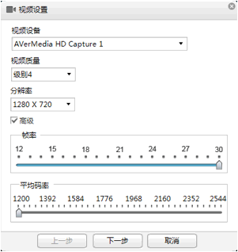

在会议中，主持人可以开启/关闭与会者的视频模式，对视频的画面质量也可以进行设置。
设置视频
在会议中，您可以通过视频设置向导调整视频质量级别、视频分辨率、视频帧率和平均码流，从而改变视频图像的质量。
➢ 设置视频的显示效果
1. 在视频面板中，单击。
系统显示“视频设置”窗口。
说明：
您也可以在工具栏中单击 ，选择“音视频设置 > 视频设置”。
，选择“音视频设置 > 视频设置”。
2. 选择“视频设备”。
如果计算机连接了多个摄像头，可以选择要使用的摄像头。
3. 设置“视频质量”级别。
级别越高，视频画面质量越好，但是会更多的占用计算机的资源和网络带宽。
4. 设置视频“分辨率”。
即设置摄像头发送视频图像的分辨率。分辨率越高，视频图像越清晰。
5. 可选: 选择“高级”，设置视频帧率和平均码率，如图所示。
视频设置

- 设置帧频：即设置每秒钟内摄像头发送的视频帧数。帧频越高，视频传输越快，但是会占用更多的计算机资源和网络带宽。
- 设置平均码率：即设置视频文件在单位时间内使用的数据流量。平均码率越大，视频质量越好，但是占用的网络带宽也越大。
6. 单击“下一步”。
7. 调整视频显示画面，单击“确认”。